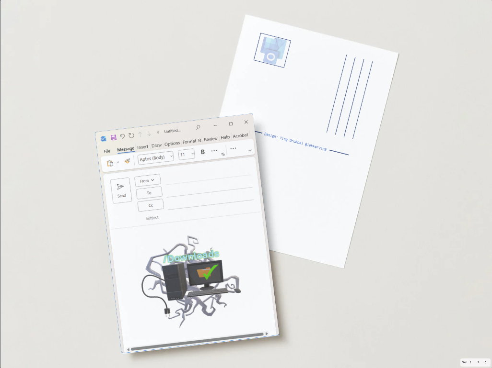
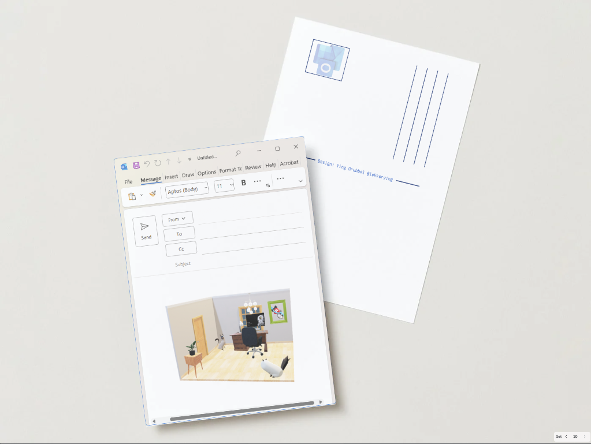
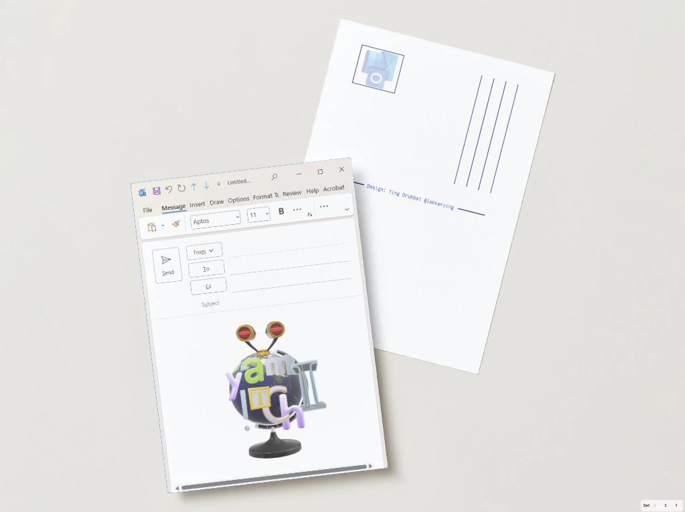
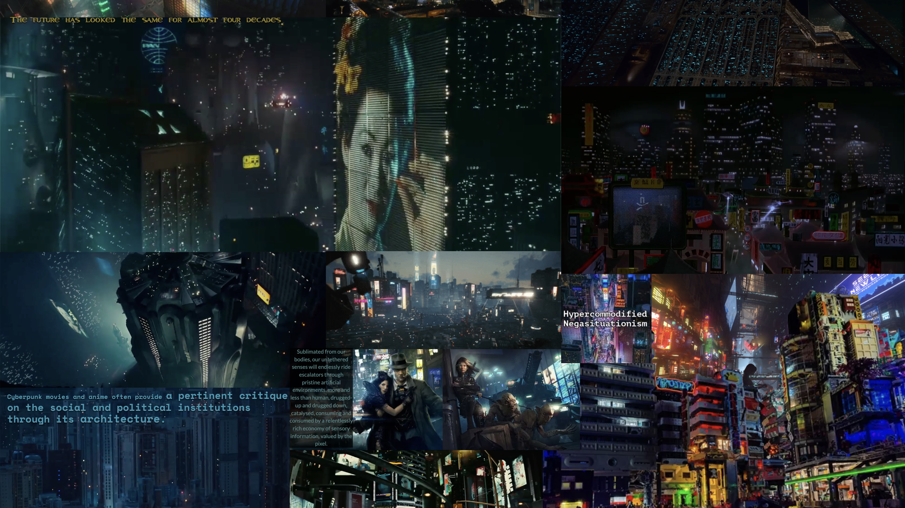
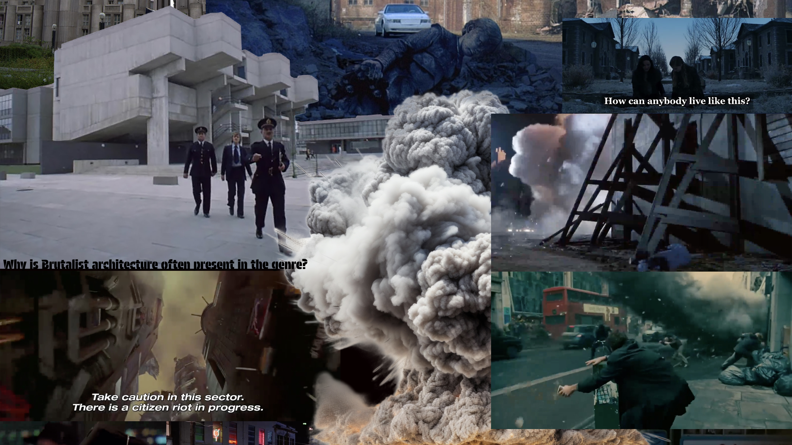
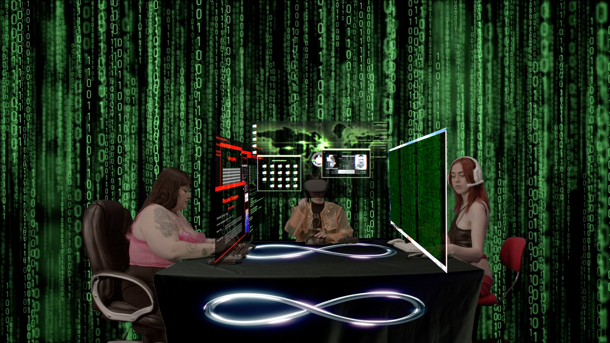
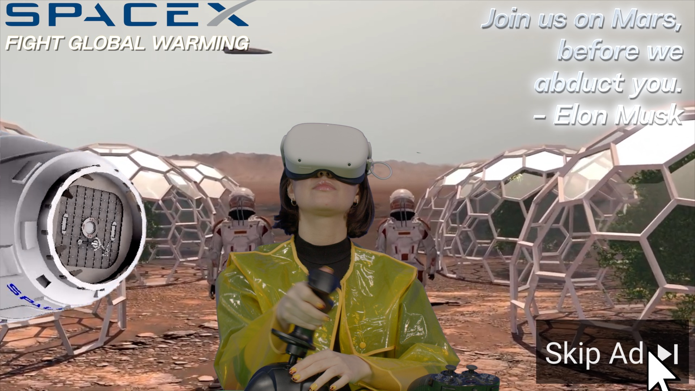
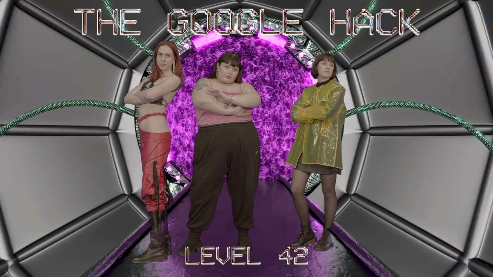

Brand Assets
Venue
19-12-2025(Fri) 15:00 – 20:00
Market
Market
Scroll with your feet, not your thumb. At Internet Yami-Ichi, you’ll sift internet-ish treasures into real world.
🔗Internet Yami-Ichi is a flea market-style event where people deal with “Internet-ish” items in real space.
Algorithmic Imaginations
Marijke Goeting
This book asks how artists and designers can play an active, critical role in shaping our understanding of its possibilities and limitations. The book investigates how AI relates to human imagination, creativity, and embodiment, as well as to social inequality, other life forms, and ecology. Steering away from hype and mystification, Algorithmic Imaginations centers on situated experiences, perspectives, and practices from the field of art and design. Bringing together written contributions, recorded conversations, and visual explorations, the publication invites students, practitioners, and researchers to reflect on the presence of AI in their own work. How do different generations of makers approach this technology? What kinds of questions—and forms of imagination—are needed to reimagine our future relations with machine intelligence?
With contributions by Siri Beerends, Vera van der Burg, Sofia Crespo, Marco Donnarumma, Marijke Goeting, Lauren Lee McCarthy, Maaike van Neck, Soyun Park, Anna Ridler, Pilar Rosado, Nikola Scheibe, Casper Schipper, Philipp Schmitt, Lukas Völp and Sabine Winters.
Anime girl candles
My Pony Little
Bit Bar
Bram.d.g
These are 4 bit rope core units. Since the modern RAM prices are exploding due to Ai, you can now own your own 4 bit RAM memory unit for a monster budget.
One of the earliest methods of computer memory manufacturing is ferrite core memory assembly. The history of this chip development relied on skilled craftswomen to weave these core memories by hand in the 1960's.
Every core woven equals one bit that could flip polarity. This is how 0 and 1 have been physically visible in computers
Clone and Paste
Hyebin
Clone yourself in the ASKII world!
Corecursion of the net
Berend te Linde
Corecursion of the Net is a minimal ever-unfolding narrative machine that visualizes the internet’s logic of continual recombination and self-reference.
Create Your Own Reaction Image!
Sep
Ever wanted to send one of your niche reaction images or whatsapp stickers in real life? Now you can with these diy reaction image magnets.
DAT stickers
Minji
Stickers of the Artez design art technology department
Ginnungagap
Vi
Birds are fascinating creatures that coexist with us in our everyday lives and constantly inter-act with us. One of the oldest scientific practices that interprets the nature, movements, and behavior of birds as predictive factors is Ornithomanteia. Birds were the messengers of the gods. Today, research is being conducted on the Internet of Animals, on their sixth sense, to help us predict possible future events on Earth. But what significance do birds have today, and how do technologies influence birds and vice versa?
The work-in-progress project Ginnungagap explores the relation between birds, digital networks, and Internet culture. Birds form flocks, share a collective motion and can migrate across the globe like online mobs. They share the sky with us and position themselves between us, our devices, and the satellite from which we receive the internet signal. Their bodies cary our information. The project will result in a film in collaboration with the composer Baz Laarakkers in the future and is currently being presented in the form of posters with still images from the first recordings. The posters show birds in their relation und connection to information transfer, signals and us.
j-ticks
Lucia
This joysticks will give your controller a different vibe for gaming. Some of them are also just decorative. Depending on the joystick you have, you have to beat that game!!
Outlook PostCards
Ying
Send an offline email through the outlook postcards. The designs are made using the 3D objects that are in the software.



PNG
Uijae
png 3d printed object
Exhibition
Exhibition
Bubble Porn
Lina
Bubble Porn refers to an early 2000s internet phenomenon in which digital edits made fully dressed people appear naked. This paradoxical process — “covering up” to “undress” — acts as a reversal of censorship, revealing how digital manipulation can shift the boundaries between exposure and concealment.
In this installation, a reactive interface built in TouchDesigner tracks the movement of a person in real time and places their image within the Bubble Porn effect. The participant’s body becomes part of a live composition that simulates states of undress within a public digital space.
The work explores how objectification and intimacy transform when mediated through screens — how the sense of being “looked at” can become both playful and unsettling when the body exists as a rendered image rather than a physical presence.
Collaborative noise
Sep
BA broken computer screen with colorful pixels. Interactive installation that creates static noise.
Notificaâãæåtion
Jurre
Notificaâãæåtion is an interactive sound-based artwork built from iconic notification tones sourced from online platforms such as MSN and Discord. In our daily lives, we’re inundated with digital alerts—constant auditory pings that signal activity happening somewhere on the internet. This work recontextualizes those familiar sounds, inviting viewers to shape them into rhythmic patterns and textural soundscapes. Participants can manipulate Speed, Pitch, Wavefold, and Reverb to transform these everyday digital cues into new, ambient auditory experiences.
OS Fan Fiction
Janne Schimmel
OS Fan Fiction is a fantasy operating system port for the Nintendo DS
You Look Like Somebody to Somebody, 2025
Josh Sender
Collaging hundreds of free stock video close-ups of people collected since 2022. Presenting nearly endless videos of individuals, uncomfortably cropped on random features, the work incorporates many of the most popular “Person, Close-Up” videos from free stock video websites. The video is paired with two streams of layered audio: ASMR recordings collected during the same period, and free-to-use choral singer recordings made to function as digital instruments. The ASMR audio has been chopped up, stretched, and compressed. Each video clip is paired with a single discordant note from the “choral singers instrument". This artwork is about privacy, intimacy, trust, loneliness, our relationship to our own image and each other’s image, and our culture’s reflection of whose likeness and narratives are most marketable and valuable.Stock video description: "The best free stock photos, royalty free images & videos shared by creators."Choral singer instrument description: "Six traditional Gaelic singers recorded inside the ruins of a 1960s seminary. Originally a training campus for catholic priests, St Peter’s Seminary shut down in 1980 and fell into disrepair. In the concrete skeleton of the former chapel, [we] captured a small group of singers performing a captivating range of aleatoric techniques, inspired by Celtic vocal traditions."ASMR source description: "a bit of comfort, chit chatting, tapping, crinkling and whispering tonight. Thinking of you."
Film Screening
Film Screening
Pause YouTube and press play on us!
You can watch a whole mix of short films which deal with the interaction between humans and technology, internet culture, networks, and AI.
Homunculus
Bonheur Suprême
The Future... Is Just Like You Imagined
Sara Bezovšek, Slovenia, 2024
English | 13 min
The Future ... Is Just Like You Imagined is a short experimental animation film that explores two distinct dystopian futures through the lens of our internet and pop culture imaginarium. It assembles an extensive collection of visual tropes and clichés to depict a grim vision ruled by totalitarian systems of control, coercion and oppression. From brutal autocratic dictatorships to decaying cyberpunk megacities, familiar imagery warns of a self-fulfilling prophecy that may be upon us.


Sara Bezovšek, The Future... Is Just Like You Imagined, 13’, 2024, film still. @Sara Bezovšek
Their Eyes
Nicolas Gourault
We share the sky
Vi Reichel
WhatRemains, Genesis
Lou Fauroux, France, 2024
English | 18 min 13 sec
2048. Google owns most of the planet and is now run by Mark Zuckerberg. He finds a cure for death, through a digital immortality software that allows him to download himself into a hologram. While it is reserved for an elite group of rich and powerful men, a group of hackers seizes the source code of this program containing the antidote of immortality and makes it accessible to the whole world.



Lou Fauroux, WhatRemains, Genesis, 18’, 2023, film still. @Lou Fauroux
Trade & Chill Corner, Chatroom (A)rnhem
Bring your own devices to trade, chill and meet offline! Come hang out with your Streetpass, Tamagotchi's and Furby's. Or Trade your Pokémon with the classic Link Cables (provided)! You can also just chill or chat through PictoChat. Hopefully you will make some new friends to add in your offline friendlist (provided).